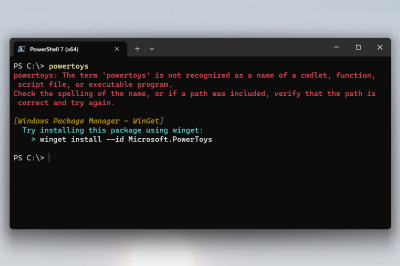

Command Not Found utility for PowerShell
The PowerToys Command Not Found utility is a PowerShell 7 module that detects command-line errors and suggests relevant WinGet packages to install. This tool helps Windows users quickly find and install missing commands, improving productivity and reducing troubleshooting time.
Important
There are some incompatibilities between Command Not Found and some PowerShell configurations. Read more about them in issue 30818 on GitHub.

Requirements
Install the module
To install the Command Not Found module, go to the Command Not Found page in PowerToys settings and select Install. Once the installation has completed, the following PowerShell 7 experimental features needed for the module to function will be enabled:
- PSFeedbackProvider
- PSCommandNotFoundSuggestion
After that, the PowerShell profile file will be appended with following block of PowerShell commands:
#34de4b3d-13a8-4540-b76d-b9e8d3851756 PowerToys CommandNotFound module
Import-Module "<powertoys install dir>/WinGetCommandNotFound.psd1"
#34de4b3d-13a8-4540-b76d-b9e8d3851756
Note
The profile file will be created if needed. Restart PowerShell session to use the module.
Uninstall the module
To uninstall the Command Not Found module, go to the Command Not Found page in PowerToys settings and select Uninstall. Once the uninstallation has completed, the block of commands previously added will be removed from the PowerShell profile file.
Install PowerToys
This utility is part of the Microsoft PowerToys utilities for power users. It provides a set of useful utilities to tune and streamline your Windows experience for greater productivity. To install PowerToys, see Installing PowerToys.